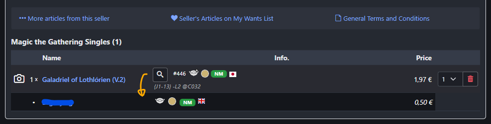

Cardmarket Utilities enhances your experience by providing additional tools like prices from other sellers in the shopping cart. Simply add this bookmarklet to your browser's bookmarks bar to get started.
Drag this button to your bookmarks bar or right-click and select "Bookmark this link":
Cardmarket UtilitiesOnce added, go to the Cardmarket page and click the bookmark on supported pages to activate the helper.
Features:
-
Shopping cart:
- Checks card prices from other sellers in your shopping cart and your favorite sellers.
- Integrates seamlessly into the shopping cart page.